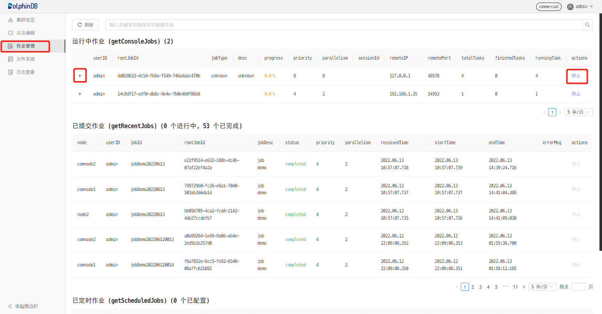

作业管理
作业（job）是 DolphinDB 中最基本的执行单位，可以简单理解为一段 DolphinDB 脚本代码在系统中的一次执行。作业根据阻塞与否可分为同步作业和异步作业。
同步作业
同步作业的提交
同步作业也称为交互式作业（interactive job），主要通过以下方式提交：
- DolphinDB GUI
- DolphinDB Console(命令行)界面
- DolphinDB Terminal
- VSCode插件
- DolphinDB提供的各个编程语言API接口
- Web notebook
同步作业会阻塞客户端当前的连接，在当前作业返回之前客户端不能再发送新的作业，所以用户能同时发送的同步作业的数量取决于当前节点的最大连接数(通过配置项maxConnections设置)。一个节点能同时执行的同步作业数取决于worker数量（使用非web客户端时，通过配置项workerNum设置）和web worker数量（使用web客户端时，通过配置项webWorkerNum设置）。系统接收同步作业后先进入队列，然后分配给worker或web worker执行。
同步作业在客户端当前连接的节点提交执行，若想在当前连接提交同步作业到同集群另一个节点执行，可调用rpc函数,例如下面代码可查看节点 node2上最近完成的3条查询分布式数据库的SQL语句的描述信息：
rpc("node2",getCompletedQueries{3})同步作业的查询
同步作业创建后，可以使用getConsoleJobs查看作业信息。示例如下：
getConsoleJobs();
node userID rootJobId jobType desc priority parallelism receiveTime sessionId
------ ----- -------------- ------ ------- ------- ----------- ---------------------- -------------
NODE_1 admin b4ff7490-9a... unknown unknown 0 1 2020.03.07T20:42:04.903 323,818,682
NODE_1 guest 12c0be95-e1... unknown unknown 4 2 2020.03.07T20:42:06.319 1,076,727,822上述结果中node是作业所在节点名，userID是作业创建者，用户可以根据userID找到自己创建的作业，rootJobId是作业编号，priority是优先级，parallelism是并行度，receiveTime是系统接收到作业的时间，sessionId是会话ID。这里需要注意的是：
- 同步作业会独占前台界面，需要另起一个会话（例如开启另一个GUI）来连接当前节点并运行
getConsoleJobs。 - 可以用
rpc和pnodeRun查看某个节点或全部节点的同步作业。查看全部数据节点/计算节点上同步作业信息的脚本如下所示：
pnodeRun(getConsoleJobs)另一种方法是在web集群管理器上查看作业。从1.30.16版本起，DolphinDB在web集群管理界面上增加了作业管理功能，支持查看和取消作业。如下图所示，点击左侧边栏中的作业管理后，右边界面会显示运行中的同步作业、已提交的批处理和定时作业。点击同步作业的 +,可显示同步作业的详细信息，点击停止，可取消作业。

同步作业的取消
取消同步作业可用cancelConsoleJob函数。在DolphinDB系统中，每个作业都有一个唯一的编号，即rootJobId，当作业有很多子任务时，每个子任务的rootJobId跟父作业的rootJobId一致。在DolphinDB系统中取消作业的操作是根据rootJobId进行的。作业编号需用上节所述的getConsoleJobs函数获取。运行getConsoleJobs和cancelConsoleJob需要另起一个会话。为方便用户，DolphinDB GUI中提供了一个取消作业按钮可直接取消当前作业。当作业正在运行时，若强制关闭GUI，GUI会发送一个取消作业的命令，以取消已提交的作业。取消集群中其他节点上的同步作业可借助rpc或pnodeRun函数。例如下面脚本定义了一个取消节点上所有同步作业的函数，并用pnodeRun提交到所有数据节点、计算节点执行：
def cancelAllConsoleJob(){
cancelConsoleJob(getConsoleJobs()[`rootJobid])
}
pnodeRun(cancelAllConsoleJob)这里需要注意的是：
- 首先，DolphinDB的作业是基于线程的，线程不能被直接取消(kill)，所以DolphinDB通过设置Cancel标志的方法来实现。系统在收到取消作业的命令后，设置一个Cancel标志，然后在执行作业的某些阶段，例如开始某个子任务、开始每一轮循环前，去检测是否设置了Cancel标志。若设置了Cancel标志，则取消作业。因此取消作业不是马上就可生效，可能会有一点延迟。
- 其次，实践中可能会遇到几个问题：
- 问题1：一个节点的连接数已经用完，无法发送取消作业的命令。若DolphinDB节点是前端交互模式启动，可以在DolphinDB console中执行。若部署模式是集群模式，任意两个节点之间如果已经建立了一些连接，这些连接一般是不会释放的，所以可以尝试从其他节点删除指定的作业。DolphinDB是一个分布式系统，无论从哪个节点删除一个作业，该节点都会将任务广播到其它节点。
- 问题2：节点的作业队列中有大量的作业在排队，
cancelConsoleJob或getConsoleJobs无法立即被执行。解决此问题的方法，一是用GUI中的取消作业按钮，这个按钮发送任务时会以urgent(紧急)方式发送，也即最高优先级处理；二是从其他节点删除指定的作业，取消子任务的任务发送时也以最高优先级处理。
异步作业
异步作业是在DolphinDB后台执行的作业，这类任务一般对结果的实时反馈要求较低，且需要长期执行，包括：
- 通过
submitJob或submitJobEx函数提交的批处理作业。 - 通过
scheduleJob函数提交的定时作业。 - 流数据作业。
批处理作业的创建
批处理作业使用 submitJob 或 submitJobEx 创建。两者的区别是 submitJobEx 可以指定作业的 priority（优先级）和 parallelism（并行度），这2个概念的详细描述见本文后面章节。
对某些比较耗时的工作，如历史数据写入分布式数据库、即席查询等，我们可以把它封装成一个函数，然后创建为批处理作业。批处理作业与常规交互作业分离，在独立工作线程池中执行。在系统中，批处理作业工作线程数的上限是由配置参数maxBatchJobWorker设置的。如果批处理作业的数量超过了限制，新的批处理作业将会进入队列等待。批处理作业工作线程在闲置超过60秒后会自动销毁。
批处理作业在客户端当前连接的节点提交执行，若需提交到同集群另一个节点执行，可调用rpc函数,例如下面的脚本定义了一个自定义函数demoJob,并提交到node2节点执行：
def demoJob(n){
s = 0
for (x in 1 : n) {
s += sum(sin rand(1.0, 100000000)-0.5)
}
return s
};
rpc("node2", submitJob, "demoJob", "a demo job", demoJob, 1000);批处理作业的查询
节点上所有批处理作业的信息，可以用 getRecentJobs 查看。示例如下：
getRecentJobs(4);
node userID jobId jobDesc priority parallelism receivedTime startTime endTime errorMsg
---- ------ ----- ------- -------- ----------- ------------ --------- ------- --------
NODE_0 admin write write 4 2 2020.03.08T16:09:16.795
NODE_0 admin write check 4 2 2020.01.08T16:09:16.795 2020.01.08T16:09:16.797
NODE_0 guest query query 0 1 2020.01.10T21:44:16.122 2020.01.10T21:44:16.123 2020.01.10T21:44:16.123 Not granted to read table dfs://FuturesContract/
NODE_0 admin test foo 8 64 2020.02.25T01:30:23.458 2020.02.25T01:30:23.460 2020.02.25T01:30:23.460 在作业状态信息列表中，
若 startTime 为空，如上述第一个作业，表示作业还在排队等待执行。
若 endTime 为空，如上述第二个作业，这意味着作业还在执行中。
若 errorMsg 非空，如上述第三个作业，表示作业有错误。
getRecentJobs函数可查看多个作业状态信息，若只需查一个特定的作业状态信息，可用getJobStatus函数。若需查询集群内其他节点的批处理作业信息，可调用用
rpc或pnodeRun。查看全部数据节点/计算节点上批处理作业信息的脚本如下所示：
pnodeRun(getRecentJobs)注意：
getRecentJobs只返回当前节点本次启动后提交作业的信息，不包括重启之前提交的作业。若要查看重启前的任务信息，可以查看磁盘文件。
DolphinDB 系统把批处理作业的输出结果保存到磁盘文件。文件路径由配置参数 batchJobDir 指定，默认路径是 <HomeDir>/batchJobs 。每个批处理作业产生两个文件夹：<job_id>.msg 和 <Job_id>.obj ，分别存储中间消息和返回对象。另外，当系统接收、开始和完成批处理作业时，每个批处理作业会向 <BatchJobDir>/batchJob.log 添加一条信息。DolphinDB提供了以下2个函数查看相关信息：
getJobMessage: 取得批处理作业返回的中间消息。getJobReturn: 取得批处理作业返回的对象。
批处理作业的取消
对已经提交但尚未完成的批处理作业，可使用cancelJob命令取消。与同步作业一样，系统通过设置Cancel标志的方法来取消作业，因此取消作业不是立即就能生效。若需取消其他节点上的批处理作业，可调用rpc或pnodeRun函数，例如下面的脚本可取消所有数据节点/计算节点上未完成的批处理作业：
def cancelAllBatchJob(){
jobids=exec jobid from getRecentJobs() where endTime=NULL
cancelJob(jobids)
}
pnodeRun(cancelAllBatchJob)子任务
在DolphinDB中，对于大型数据表，一般都需要进行分区处理。如果一个job里含有分区表的查询计算任务（如SQL查询），系统会将其分解成多个子任务并发送到不同的节点上并行执行，待子任务执行完毕之后，再合并结果，继续此job的执行。类似的，DolphinDB分布式计算也会被分解成子任务，以子任务为单位进行调度。因此，job也可以理解成一系列的子任务。
DolphinDB首先是一个数据库，内置的计算引擎主要解决高并发、交互式的计算任务。因此DolphinDB的资源配置方式与Apache Spark 等低并发、批处理的计算引擎有所不同。Apache Spark 以独占方式按应用事先分配计算资源包括CPU核，内存等。DolphinDB则将作业分解成子任务，以子任务为单位进行调度。每一个子任务并不独占CPU核和内存。而是将计算资源放入一个共享的资源池，根据每个计算任务的优先级和并行度来调度子任务。
子任务分解方法
根据数据源的不同，DolphinDB用不同方法分解作业的子任务：
- 对大部分的作业如SQL查询，DolphinDB以数据库分区为单位分解，每一个分区分配一个子任务，计算下推到存储引擎执行，计算和存储耦合。这种计算任务的分解是由数据库的分区模式决定的，因此创建数据库时如何合理的分区非常重要。
- 对另一种涉及到数据清洗的作业，譬如用
repartitionDS产生数据源，然后使用mr（map reduce）或imr（iterative map reduce，通常用于机器学习）函数来计算的作业。这类作业计算和数据分离，repartitionDS产生的每一个数据源就是一个子任务。
作业调度
作业优先级
在DolphinDB中，作业是按照优先级进行调度的，优先级的取值范围为0-9，取值越高则优先级越高。对于优先级高的作业，系统会优先给与计算资源。基于作业的优先级，DolphinDB设计了多级反馈队列来调度作业的执行。具体来说，系统维护了10个队列，分别对应10个优先级。系统总是分配线程资源给高优先级的作业，对于处于相同优先级的作业，系统会以round-robin的方式分配线程资源给作业；当一个优先级队列为空的时候，才会处理低优先级的队列中的作业。
DolphinDB作业的优先级可以通过以下方式来设置：
- 对于同步作业，其优先级取值为min(4，通过
setMaxJobPriority函数设定的该用户最高优先级)。 - 对于通过
submitJob提交的批处理作业，系统会给与默认优先级4。用户也可以使用submitJobEx函数来指定优先级。 - 定时任务的优先级设为4，无法改变。
作业并行度
并行度表示在一个数据节点上，最多同时可以用多少个线程来执行该作业产生的子任务。并行度默认取值为2，只有使用submitJobEx函数提交的批处理作业才可通过其参数parallelism配置并行度。
并行度可以认为是一种时间片单位。举例来说，若一个作业的并行度为2，且该作业产生了100个并行子任务，那么系统只会分配2个线程用于子任务的计算，因此需要50轮调度才能完成整个作业的执行。为了充分利用资源，系统会进行优化。若当前的本地执行线程有16个，只有一个作业在运行，即使并行度是2，系统也会分给其16个线程。
调度策略
当有多个作业时，系统按照作业的优先级来调度子任务，优先级高并行度高的作业会分到更多的计算资源。为了防止处于低优先级的作业长时间等待，DolphinDB会适当降低作业的优先级。具体的做法是，当一个作业的时间片被执行完毕后，如果存在比其低优先级的作业，那么将会自动降低一级优先级。当优先级到达最低点后，又回到初始的优先级。因此低优先级的任务迟早会被调度到。
下面以A，B两个作业举例说明。A作业优先级6，并行度4，子任务个数16。B作业优先级4，并行度2，子任务个数2。资源池中的线程个数为4。第一轮调度，优先级最高的是6，计算资源全部分给A。执行完毕后，A的优先级降到5，A的子任务还剩12个。第二轮调度，优先级最高是5，计算资源全部分给A。执行完毕后，A的优先级降到4，A的子任务还剩8个。第三轮调度，优先级最高是4，A和B各有2个子任务被执行。执行完毕后，B已经完成，A优先级仍然为4，A的子任务还剩6个。虽然A的优先级和并行度更高，但是因为子任务太多，最终B先完成任务。
计算容错
DolphinDB的分布式计算的容错性得益于分区副本冗余存储。当一个子任务被发送到一个分区副本节点上之后，若节点出现故障或者分区副本发生了数据校验错误(副本损坏），job scheduler(即某个数据节点的一个worker线程)将会发现这个故障，并且选择该分区的另一个副本节点，重新执行子任务。可以通过配置参数dfsReplicationFactor来调整这种冗余度。
数据和计算资源的均衡
要提高计算效率，最关键的是数据和计算资源的均衡。具体包括：
- 如果包含多个数据节点，每个节点的计算资源尽量均衡；
- 数据库表的各个分区大小保持均衡；
- 如果是多数据节点，每个节点上的分区数量尽量保持均衡。
当计算引擎出现性能问题，或者某些作业耗时太久，可以从下面这些途径排查问题:
- 首先，查看所有节点的资源使用情况，譬如每个节点平均负载，CPU使用率，网络读写性能，磁盘读写性能，内存使用情况，作业和子任务队列深度等等。这些指标可以从Web界面读取。如果与Prometheus集成，也可以从Prometheus观察。或者通过内置函数getPerf、getClusterPerf、getJobStat、getDiskIOStat等来观察这些指标。高阶函数
pnodeRun可以帮助在所有数据节点上运行这些函数。 - 其次，可以分析作业涉及的数据的分布，包括分区的数量，分区在各个节点上的分布。函数
getAllChunks，getClusterChunksStatus，getChunksMeta和getTabletsMeta可以获取分区的分布信息。
计算节点
DolphinDB从1.30.14/2.00.1版本开始支持计算节点。计算节点只用于数据的查询和计算，一般应用于计算密集型的操作，包括流计算、分布式关联、机器学习、数据分析等场景。数据节点可以同时承担计算任务和数据读写任务的执行，对于一些计算任务不重的场景来说，数据节点兼任计算任务没有问题，但是对于计算逻辑较复杂，并发度较高的重计算场景下，可能会有以下影响：
- 对于数据写入的影响: 重计算任务会大量消耗CPU和内存资源，而数据写入时需要CPU来进行数据的预处理和压缩，所以对于数据写入性能会有影响。尤其对于TSDB引擎的库，因为在数据入库时要做排序索引等预处理，对CPU资源需求更大，所以在CPU资源不足时对TSDB的写入性能影响较大。
- 对于数据读取的影响: 若大量内存被计算任务占用，那么读取数据时，可能因内存不足导致OOM异常。所以重计算情况下，建议通过计算节点来隔离计算任务和数据读写任务的资源。
计算节点不存储数据，但可以加载分布式数据库的数据进行计算。通过在集群中配置计算节点，将写入任务提交到数据节点、所有计算任务提交到计算节点，系统实现了存储和计算的分离。